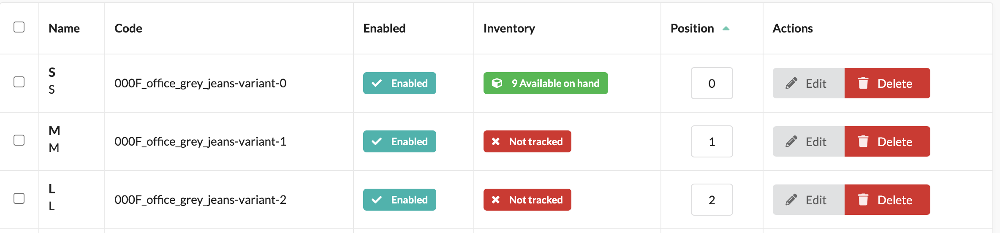
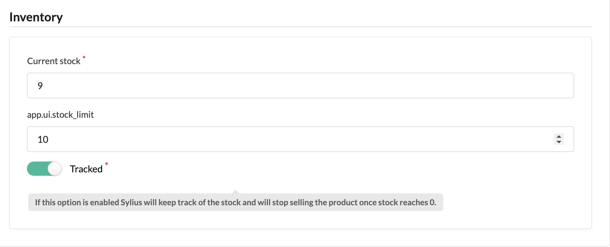

Are you missing a stock limit in your Sylius storefront? Say no more! In this article, we’ll show you how to add a Stock Limit to your Sylius Storefront with ease. With Sylius’ flexibility and malleability, you can enhance your inventory in ways you never thought possible. And who knows? You might even have some fun along the way 😉.
Reading time: 13 minutes
Table of content
How it starts
The 'Track' button is Sylius’ trusty sidekick to keep your inventory in check with. With it you can ensure that you only sell what is in your stock.So what is it? It’s Sylius’ inventory feature! With this feature, you can set how many items are available for each product variant you have. By setting 'Track' on it, Sylius will add a validation check when a customer wants to add that item to their cart. This way, you will never sell more than what you have. But is it enough?
Sometimes, you just need a little extra something to feel like a true eCommerce master. Perhaps you don't want to sell all the items in stock, but keep some in store for later. Such a neat buffer-feature would be truly great to have. As this does not come out-of-the box for us, we will make it ourselves!
To reach our aim to feel like that eCommerce master we all strive to be, here is what we will do:
- Create a
StockLimitInterface - Implement the interface on
ProductVariantand add astockLimitfield - Update the UI for setting the limit
- Create an
AvailabilityCheckerDecorator
I shop therefore I am. It’s like Descartes but with more bags.
By the end of this article, you’ll be able to take advantage of our new, fresh-from-the-press, feature: individual stock limits for each product variant. With this feature, you’ll be able to set limits on how many of each product variant can be added to a cart. You’ll also be able to see when a product variant has less than the limit in stock. This new feature is perfect for businesses that want to manage their inventory more effectively and avoid overselling products. So let’s dive in and see how it all works!
Step 0
In this tutorial we will have PHP 8.1 and Sylius 1.12. If ever you need to compare your code, or rightfully snatch a whole lot of it, you can checkout the GitHub repository SomeLimitsShop:start (the start-branch has the initial setup).
Additional details:
- A docker-container for serving a MariaDB database. Remove all the configurations in the docker-compose.yml if you are starting from scratch and keep configuration for the database. See the GitHub repository for reference
- As a development server we will use the Symfony development server. A good alternative is using the built-in PHP development server:
php -S localhost -t /public - We will use Sylius default fixtures to load the database (
php bin/console sylius:installwill set it up for us)
Creating potential with a StockLimitInterface
Our starting point is defining the means for which we will check stock limits. Let’s get this in writing with a new interface, StockLimitInterface. We create this file at ./src/Inventory/StockLimitInterface:
<?php
namespace App\Inventory;
interface StockLimitInterface
{
public function getStockLimit(): int;
}
Make ProductVariant meatier
We enhance ProductVariant with the StockLimitInterface and add the accompanying field stockLimit. We will let it be nullable in the database but we will check its value before returning it in the getter. This way we will stay true to the interface and avoid any beef with our code.
<?php
declare(strict_types=1);
namespace App\Entity\Product;
use App\Inventory\StockLimitInterface;
use Doctrine\ORM\Mapping as ORM;
use Sylius\Component\Core\Model\ProductVariant as BaseProductVariant;
use Sylius\Component\Product\Model\ProductVariantTranslationInterface;
/**
* @ORM\Entity
* @ORM\Table(name="sylius_product_variant")
*/
#[ORM\Entity]
#[ORM\Table(name: 'sylius_product_variant')]
class ProductVariant extends BaseProductVariant implements StockLimitInterface
{
/**
* @ORM\Column(type="integer", nullable=true, options={"default" : 0})
*/
private $stockLimit;
protected function createTranslation(): ProductVariantTranslationInterface
{
return new ProductVariantTranslation();
}
public function getStockLimit(): int
{
return $this->stockLimit ?? 0;
}
/**
* @param mixed $stockLimit
*/
public function setStockLimit(?int $stockLimit): void
{
$this->stockLimit = $stockLimit;
}
}
Whenever we make a modification to an entity like this, we want to update the database schema accordingly. As Sylius is running with Doctrine, we have a couple of handy CLI commands at our disposal. Run these commands to update the database:
php bin/console doctrine:migrations:diff- to create a migrations-file with details for Doctrine on how to update the schema.php bin/console doctrine:migrations:migrate- to run the migration file.
Behold the new field - update the UI
If we go to the Sylius Admin view and navigate to a product variant and its inventory-tab, we see that they may have a stock value, and per the default fixture it will not be set to be “tracked”. We will add a field to this view to set the Stock Limit. We will also add a field to the variants list-view so we can at a glance see if current stock is below the limit.
While we are at the product variant view, let us update the Inventory to be tracked! Simply switch the slider and click “Save Changes”. When an inventory for a variant is tracked, we can see its current status in the product variants list. In the image below, we see that the first variant has 9 Available on hand. This field will also show the Stock Limit when we’re done here.

What we will need:
- Enhance the form for ProductVariant to map the field
stockLimitto a form field - Override the tab-template for inventory to add the form-field
- Override the grid-template for inventory to show the stock-limit on variants-view
- Also, we will add a translation field!
Enhancing ProductVariant’s form type
It is a nice day when we don’t have to start from scratch. Since Sylius already has defined a Form type for ProductVariant, we will extend it through form type extensions! This will let us define just the field we have added to the ProductVariant and specify what type of form-field it should be. Let's create a new file at src/Form/ProductVariantTypeExtension.php
<?php declare(strict_types=1);
namespace App\Form;
use Sylius\Bundle\ProductBundle\Form\Type\ProductVariantType;
use Symfony\Component\Form\AbstractTypeExtension;
use Symfony\Component\Form\Extension\Core\Type\IntegerType;
use Symfony\Component\Form\FormBuilderInterface;
class ProductVariantTypeExtension extends AbstractTypeExtension
{
public function __construct(
){}
public function buildForm(FormBuilderInterface $builder, array $options): void
{
$builder->add('stockLimit', IntegerType::class, [
'label' => 'app.ui.stock_limit',
'required' => false,
]);
}
public static function getExtendedTypes(): iterable
{
return [ProductVariantType::class];
}
}
This declares that the stockLimit field should be an take integers as input. We also set its label to app.ui.stock_limit. This can be used when we want to add translations to it, but we could just have called it Stock Limit if we don't want to use the translation feature.
The only thing necessary for the triumph of bugs is for good developers to not specify data types
Override tab-template for inventory
If you ever want to update the Sylius admin view, there is a folder called ./templates/bundles/SyliusAdminBundle in your Sylius project. Here we can override any template or partial-template we like. As long as we mirror its original folder structure. For our case, we want to override the inventory template on a ProductVariant. It’s original template lies at this location: ./vendor/sylius/sylius/src/Sylius/Bundle/AdminBundle/Resources/views/ProductVariant/Tab/_inventoryContent.html.twig. It may be a bit mouthful, but that’s where it lies. Luckily, when we mirror the structure, we can just take anything after /views/ and replicate the structure to our project at ./templates/bundles/SyliusAdminBundle. So we will copy the file _inventoryContent.html.twig and paste it to ./templates/bundles/SyliusAdminBundle/ProductVariant/Tab/. Then We will add the line {{ form_row(form.stockLimit) }} to our _inventoryContent.html.twig:
<h3 class="ui dividing header">{{ 'sylius.ui.inventory'|trans }}</h3>
<div class="ui segment">
{{ form_row(form.onHand) }}
{{ form_row(form.stockLimit) }}
{{ form_row(form.tracked) }}
<div class="ui pointing above ignored label">
{{ form_help(form.tracked) }}
</div>
{{ form_row(form.version) }}
</div>
{{ sylius_template_event(['sylius.admin.product_variant.' ~ action ~ '.tab_inventory', 'sylius.admin.product_variant.tab_inventory'], {'form': form}) }}
And Voila! We have just customized the admin view. Congrats! This will make it possible for us to set the Stock Limit. Let’s edit the same product variant as before, go to Inventory, and set Stock Limit to 10 (or whatever value is higher than current stock) and save the changes again.

Notice our label “app.ui.stock_limit”? It’s not yet time, but soon we will update it to something speakable.
Next we will update the grid-view for product variants. In a similar fashion we find the template we want to override. Let’s create the file ./templates/bundles/SyliusAdminBundle/ProductVariant/Grid/Field/inventory.html.twig and add this content:
{% if data.isTracked %}
<div class="ui {{ (data.onHand - data.stockLimit) > 0 ? 'green' : 'red' }} icon label">
<i class="cube icon"></i>
<span class="onHand" data-product-variant-id="{{ data.id }}">{{ data.onHand }}</span> {{ 'sylius.ui.available_on_hand'|trans }}
{% if data.onHold > 0 %}
<div class="detail">
<span class="onHold" data-product-variant-id="{{ data.id }}">{{ data.onHold }}</span> {{ 'sylius.ui.reserved'|trans }}
</div>
{% endif %}
{% if data.stockLimit > 0 %}
<div class="detail">
<span class="onHold" data-product-variant-id="{{ data.id }}">{{ data.stockLimit }}</span> {{ 'app.ui.stock_limit'|trans }}
</div>
{% endif %}
</div>
{% else %}
<span class="ui red label">
<i class="remove icon"></i>
{{ 'sylius.ui.not_tracked'|trans }}
</span>
{% endif %}
The Sylius grid-system will pass in a data twig object to the form. In this case it will be an instance of a ProductVariant. So we can access its fields by using data.stockLimit. With this template we will change the color from green to red if a tracked inventory has less items on hand than the limit.
This will be the result:

This is just cosmetic still but we will add a validation for it later. But now to translation!
Add translation for app.ui.stock_limit
As a Symfony project, we will use the same translation system as we can find at other places in the Symfony-world. We will create a new file for English translations ./translations/messages.en.yaml and add the translation:
app:
ui:
stock_limit: Stock Limit
We can reload the page and find that app.ui.stock_limit is replaced with Stock Limit!
Sometimes it is required to clear the cache with
php bin/console cache:clearfor translations to show.
One language sets you in a corridor for life. Two languages open every door along the way. Three languages make you a target for Vogon poetry.

Validating Stock Limit
An item will appear as available for purchase as long as one item is available. And if a customer were to add multiple items to their cart, Sylius will first validate that it has that many items available before allowing the customer that purchase. In the example for “office grey jeans” we have 9 items in stock. So when adding 10 of these we get an error. But it will allow us to add 1. We want it to stop that as well, if it hits the Stock Limit.
What we need is to enhance the default behaviour. We want to add a feature so it checks not only if the number of items in stock reaches 0, we want it to check if it reaches the Stock Limit.
There is a very good design pattern for this. It is called Decorator pattern. This allows us to use the already present class that handles the validation of stock and add new features to it. The service used for this is called sylius.availability_checker.default. It is alias for the class Sylius\Component\Inventory\Checker\AvailabilityChecker which uses an interface called Sylius\Component\Inventory\Checker\AvailabilityCheckerInterface. We will create a decorator for this, which will implement the AvailabilityCheckerInterface and take an instance of AvailabilityChecker in its constructor. This will let our decorator use the already present class when we want just the default behaviour, otherwise we will enhance it. Here is how.
We create a new file ./src/Inventory/AvailabilityCheckerDecorator.php with this content:
<?php
declare(strict_types=1);
namespace App\Inventory;
use Sylius\Component\Inventory\Checker\AvailabilityCheckerInterface;
use Sylius\Component\Inventory\Model\StockableInterface;
class AvailabilityCheckerDecorator implements AvailabilityCheckerInterface
{
public function __construct(
private AvailabilityCheckerInterface $availabilityChecker
){}
public function isStockAvailable(StockableInterface $stockable): bool
{
return $this->isStockSufficient($stockable, 1);
}
public function isStockSufficient(StockableInterface $stockable, int $quantity): bool
{
if ($stockable->isTracked() && $stockable instanceof StockLimitInterface) {
$currentStock = $stockable->getOnHand() - $stockable->getOnHold();
$availableStock = $currentStock - $stockable->getStockLimit();
return $quantity <= $availableStock;
}
return $this->availabilityChecker->isStockSufficient($stockable, $quantity);
}
}
We see that we have two methods in this decorator. The first method is a simple availability check. It determines if at least 1 item is available. But instead of letting the default AvailabilityChecker handle it, we pass it to our second method; isStockSufficient. We add our logic to check that the Stock Limit is not surpassed if the item has implemented the StockLimitInterface.
To wire a decorator in a Symfony project (which Sylius is), is by defining it in our services.yaml and use an @.inner-argument, which will pass the decorated class to our decorator. Add the following decorator definition to ./config/services.yaml:
App\Inventory\AvailabilityCheckerDecorator:
decorates: sylius.availability_checker.default
arguments:
- '@.inner'
If we now were to try to add 1 item of “office grey jeans” we will get the same message as when we tried to add 10!
Sylius may not have a Stock Limit feature built-in, but that’s okay. We can bend it, tweak it, and make it do what we want. That’s why we love Sylius. It’s not just an eCommerce platform, it’s an eCommerce playground. And we are having fun playing with it and becoming eCommerce masters.